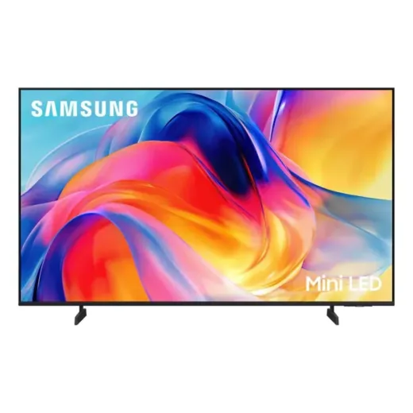
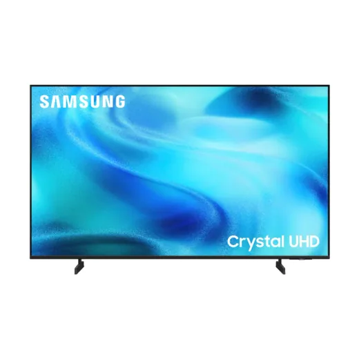
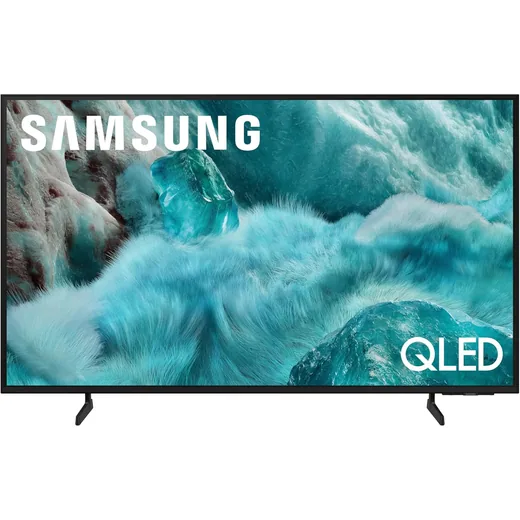
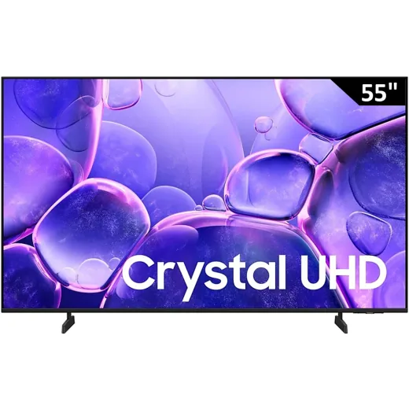

Samsung · Modelo UN50DU7000
Televisor Samsung 50" LED 4K Smart · UN50DU7000
L 9,547
En Elektra
Precio en cada tienda
| Tienda | Precio | Antes | Disponibilidad | |
|---|---|---|---|---|
| Elektra | L 9,547 | Agotado | Ver en tienda › |
Precios referenciales tomados de cada tienda el 28 de noviembre de 2026. El precio válido es el que muestra la tienda al comprar.
Historial de precio
Lo seguimos desde el 1 de noviembre. Precio más bajo registrado: L 9,547 en Elektra (13 de noviembre), igual que hoy. Cambios de precio registrados: 1.
Características
| Tamaño | 50" |
|---|---|
| Sistema | Smart TV |
| Característica | Detalle |
| Color | Negro |
| Alto | 64.7 cm |
| Alto con base | 69.4 cm |
| Ancho | 112.3 cm |
| Profundidad | 6.0 cm |
| Profundidad con base | 23.7 cm |
| Peso | 13.8 kg |
| Peso con base | 9.5 kg |
| Bluetooth integrado | Sí |
| Entradas Ethernet | 1 |
| Entradas HDMI | 3 |
| Entradas USB | 1 x USB-A |
| Sintonizador | ISDB-T/DVB-T/ATSC |
Descripción
Características Principales
Sumérgete en una experiencia visual inigualable con el Televisor Samsung UN50DU7000PX.
Su pantalla LED de 50 pulgadas con resolución 4K UHD te ofrece imágenes nítidas y vibrantes, haciéndote sentir parte de cada escena.
Gracias al sistema operativo Tizen™ Smart TV, disfruta de una navegación fluida y acceso a tus aplicaciones favoritas en un solo clic.
Ideal para maratones de series, noches de películas o videojuegos, este televisor redefine el entretenimiento en tu hogar.
¡Transforma tu sala en un cine y vive cada detalle como nunca antes!
Especificaciones Técnicas
Wi-
Otros televisores Samsung

Televisor Samsung 50" Mini LED 4K Smart · UN50M70HAL 9,495En 3 tiendas · más barato en Lady Lee
Televisor Samsung 55" LED 4K Smart · UN55U8000HPL 9,990En 2 tiendas · más barato en Diunsa Televisor Samsung 55" LED 4K Smart · UN55U8000FL 9,990En Diunsa
Televisor Samsung 55" LED 4K Smart · UN55U8000FL 9,990En Diunsa
Televisor Samsung 55" QLED 4K Smart · QN55Q7FAAL 9,990En Diunsa
Televisor Samsung 55" Crystal UHD 4K SmartL 9,995En Lady Lee Televisor Samsung 43" Crystal UHD 4K · UN43DU7000L 10,000En Walmart
Televisor Samsung 43" Crystal UHD 4K · UN43DU7000L 10,000En Walmart Televisor Samsung 50" QLED 4K Smart · QN50Q60DAL 8,990En Diunsa
Televisor Samsung 50" QLED 4K Smart · QN50Q60DAL 8,990En Diunsa Televisor Samsung 58" LED 4K Smart · UN58U8000HL 10,190En 3 tiendas · más barato en Diunsa
Televisor Samsung 58" LED 4K Smart · UN58U8000HL 10,190En 3 tiendas · más barato en Diunsa